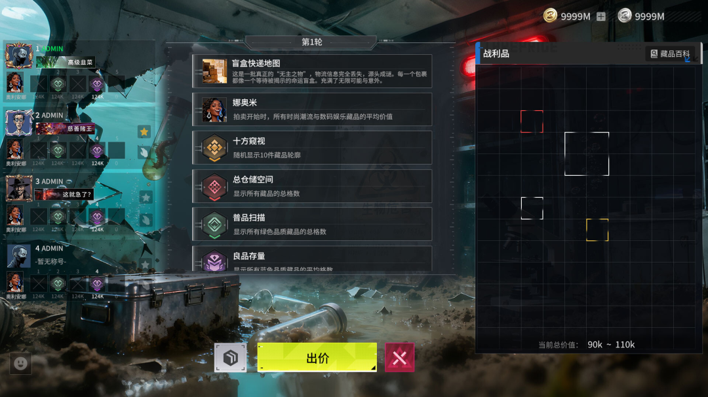
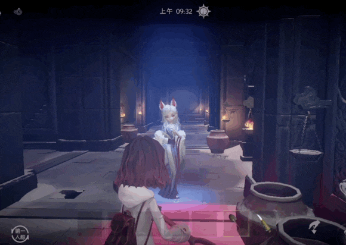
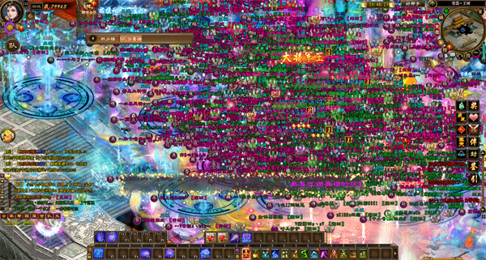
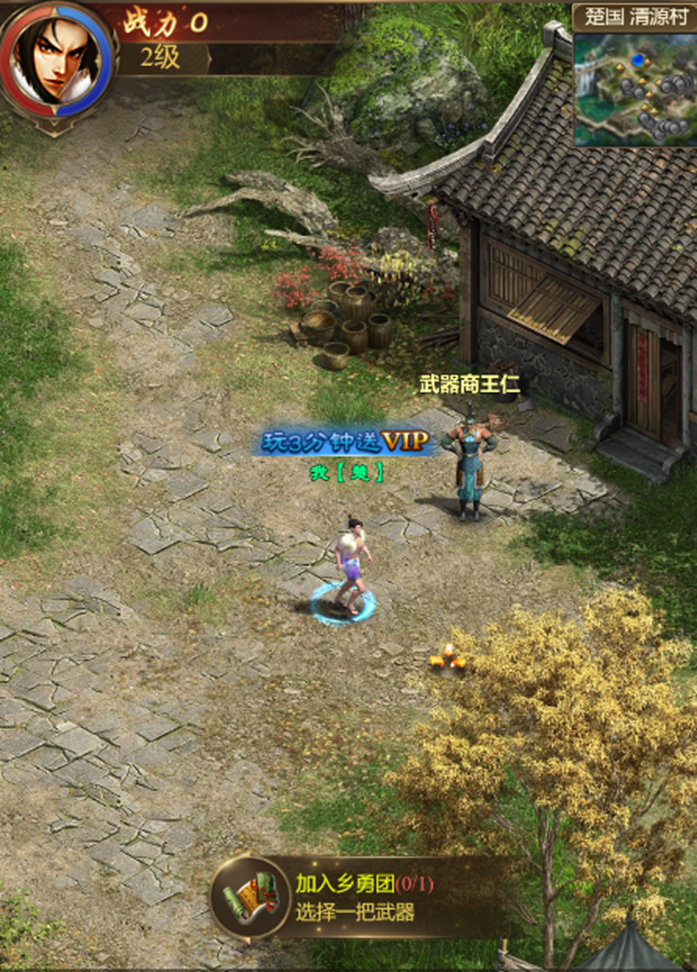
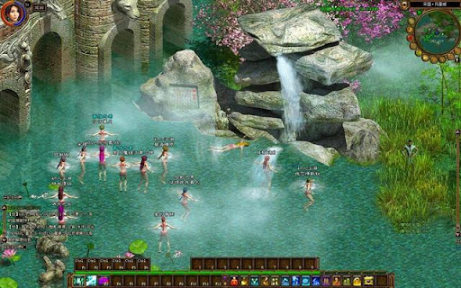
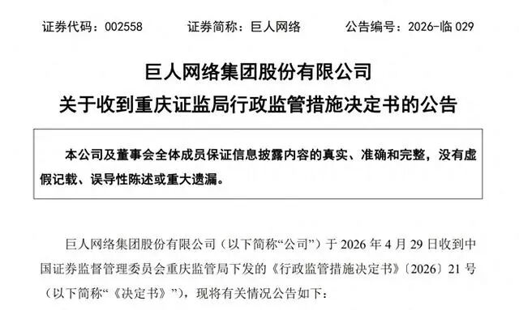
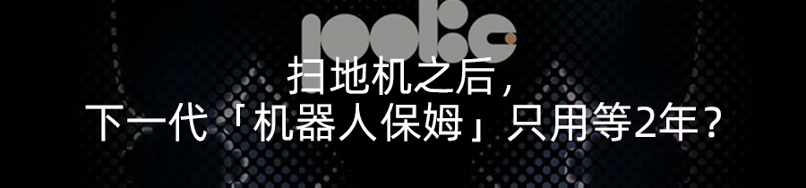
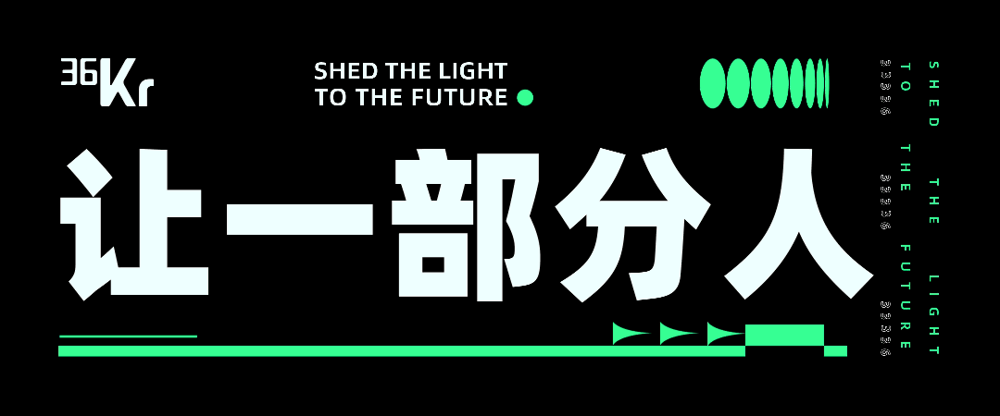

📈 活在你爸记忆里的游戏公司，正在狠狠爆年轻人金币
Giant Network: The gaming veteran cashing in on Gen Z's wallet

巨人网络发生了什么事，老将史玉柱又是凭借什么实现accomplish[əˈkɑmplɪʃ] v. 完成；实现；达到了绝地翻盘？

差评X.PIN（ID：chaping321）
在不为人知的角落，史玉柱、史静父女的胡润全球富豪榜排名，从2025年的732名，强势杀到了现在presently[ˈprɛzəntli] adv. 一会儿,不久；现在,目前的458名。短短一年时间，排名暴涨274位。
4月26日，巨人网络给出了2025年年度报告，通篇读下来descend[dɪˈsɛnd] v. 下降；下去；下来；遗传；屈尊感觉主要说的就一个字，涨。公司营业总收入、归属于上市公司股东的净利润、经营活动产生的现金流、公司总资产asset[ˈæˌsɛt] n. 资产， 财产；优点； 有用的东西……啥啥都比去年高。
反映mirror[ˈmɪrər] v. 反映,反射在股市上，数据更加直观。近一年里巨人网络的股价，仅次于十年前借壳上市时。
这就让大伙百思不得其解了，因为对当下的很多年轻人youngster[ˈjəŋstər] n. 年轻人；少年来说，史玉柱更像是上个时代的老人，是互联网考古素材，而不是一个正在赚钱的商人。
说个离谱点的，现在新一代的网民，可能都不太熟悉acquaint[əkˈweɪnt] v. 使熟悉；使认识史玉柱了。也许只有稍微年长一点的朋友，对他有一知半解，毕竟当年娱乐方式alike[əˈlaɪk] adv. 以同样的方式；类似于主要靠电视的人，脑子里基本都被史玉柱那魔性的脑白金广告打上了思想钢印。
所以，在过去的depart[dɪˈpɑrt] adj. 过去的,逝世的2025年，巨人网络发生了什么事；老将史玉柱又是凭借什么实现fulfill[fʊlˈfɪl] v. 履行；实现；满足；使结束（等于fulfil）了绝地翻盘？
其实报告里体现的很清楚clarity[ˈklærəti] n. 清楚，明晰；透明，主要原因就两点。一是做出了一个行业爆款《超自然行动proceeding[prəˈsidɪŋ] n. 行动,进行；(pl.)会议录,学报组》，二是吃《征途》IP老本。
也许有些差友觉得《超自然行动组》很眼熟，那是因为不久前，我们聊今年的爆款《鹅鸭杀》的时候提到refer[rɪˈfər] v. 参考；涉及；提到；查阅过它。
当时小发在文章里引用了这么一句话——选择了内容发行的《超自然行动组》开发商巨人网络，成了当下（落笔时）整个altogether[ˌɔltəˈgɛðər] n. 整个；裸体A股市场上，唯一拥有单款日活过千万产品的游戏公司。
相比beside[ˌbiˈsaɪd] prep. 在...旁边，在...附近；和...相比较千万日活这个让同行眼馋的数据，《超自然行动组》本身倒显得十分低调，低调的好像小发身边都没啥人讨论，合着大伙偷偷玩不喊我是吧？
现在咱们马后炮盘盘这游戏的成功秘诀，就会发现discover[dɪˈskəvər] v. 发现它最牛逼的地方是拿捏了市场的风向，做起了搜打撤+中式微恐，活该它闷声发大财。
搜打撤应该不用多说了，国内厂商恨不得每个游戏里都给你塞个搜打撤模式，没被搜打撤毒打过的玩家有福了。
现在掰扯它为啥能火已经毫无意义significance[sɪgˈnɪfɪkəns] n. 重要性; 意义了，如果说每个时代都有一股能让猪飞上天的狂风，那搜打撤一定是这两年游戏圈最大的风。小厂乘这股东风，翻盘几率odds[ɑdz] n. 几率；胜算；不平等；差别更大。
前段时间，Steam上出了个叫《竞拍之王》的游戏，基本纯蹭三角洲热度，UI直接照搬三角洲，剩下很多资产都是AI生成，也就玩法比较特殊，有点像老美那边的仓库barn[bɑrn] n. 谷仓,仓库竞拍。

可它24小时同时在线玩家数能有4万多，比很多热门游戏还爆，天天在Steam热销前十榜上挂着，开发exploit[ˌɛkˈsplɔɪt] v. 开发，开拓；剥削；开采团队蹭三角洲边角料都赚麻了。
假如你是个裤兜比脸干净的游戏厂商，让你选的话，你是选随大流整点搜打撤，还是头铁拒绝denial[dɪˈnaɪəl] n. 否认；拒绝；节制；背弃跟风？小发估计calculate[ˈkælkjəˌleɪt] v. 计算,推算；预测，估计不少厂商会急头白脸整点搜打撤，巨人网络也是一样。
然而正所谓学我者生，似我者死。市场已经给出答案了，游戏厂商们单纯照抄同行，暴毙概率极大，说人话就是，你得搞点差异化differentiation[ˌdɪfərenʃiˈeɪʃn] n. 差异化，不然鬼才玩你的山寨克隆版啊。
《超自然行动组》的差异discrepancy[dɪˈskrɛpənsi] n. 差异,不符化方向，就是中式微恐了。
看好了列位，不是中式恐怖appall[əˈpɔl] vt. 使惊骇， 使恐怖，而是中式微恐，这两个概念还是不太一样的。前者算是被业界玩烂了，现在国内玩家已经有点脱敏了，而中式微恐，就比较compare[kəmˈpɛr] v. 比较；与…相比新奇了。
根据字面理解，微恐是把中式恐怖的吓人程度削减了一下——不过是以比较抽象的abstract[ˈæbˌstrækt] adj. 抽象的方式。
比如你在阴暗dull[dəl] v. 使迟钝；使阴暗；缓和诡异的古墓里找宝贝，按传统思路，跳出来搞你的是大粽子。但在《超自然行动组》里，跳出来吓你的也许是一只土拨鼠。
当然游戏里也有设定稍微恐怖一点的怪物，但长相都比较confront[kənˈfrənt] v. 面对；遭遇；比较阳间，甚至有点萌。

尤其是公测没多久后游戏上线了宝宝模式，面目可憎的怪物monster[ˈmɑnstər] n. 怪物,妖怪,畸形的动植物一下子变得眉清目秀起来。
很多人可能感受不到中式微恐最牛的地方在哪，其实看看它的用户组成就achievement[əˈtʃiːvmənt] n. 成就知道了。
按传统heritage[ˈhɛrɪtɪʤ] n. 遗产,继承物;传统思路，恐怖游戏的受众通常是男性，而《超自然行动组》的活跃用户里，有60%是女性。
也就是namely[ˈneɪmli] adv. 即,也就是说，巨人网络不是抢了同行的流量，而是把蛋糕给做大了。甭管你玩不玩它的游戏，这点让人无法否认contradiction[ˌkɑntrəˈdɪkʃən] n. 矛盾，不一致；反驳，否认。
聊完《超自然行动组》，接着就得聊聊巨人网络的另一条大腿thigh[θaɪ] n. 大腿，股《征途》IP了。
你对这个IP不了解acquaintance[əkˈweɪntəns] n. 熟人；相识；了解；知道实属正常，因为它本身就不是在你的黄金时代诞生的产物。游戏画风就属于belong[bɪˈlɔŋ] v. 属于，应归入；居住；适宜；应被放置但凡你多看一眼，渣渣辉可能就会钻出屏幕砍你的那种，很有年代感。

事实上practically[ˈpræktɪkəli] adv. 实际地；几乎；事实上这IP确实上了年头，从公测开始到现在，已经到了21周年，有些老玩家的二胎都在考虑要二胎了。
可你甭管它老不老，服务器大哥兜里从来没差过钱。
这年头娇气的新游戏动不动就要送你十连抽，活上两年都算长寿。欲与天公试比高的《征途》，压根不惯你这的那的，还就那个你若盛开蝴蝶butterfly[ˈbətərˌflaɪ] n. 蝴蝶；蝶泳；举止轻浮的人；追求享乐的人自来，2025年，活跃人数同比提升16%。
除了PC版外，《征途》还顺应humor[ˈhjumər] v. 迎合，迁就；顺应时代潮流，搞起了小程序版本。2025年，《原始征途》月流水重回一亿元，全年累计新增用户3000万；《王者征途》年流水突破7亿，累计新增用户2700万。
所以以后别问究竟是谁还在玩《传奇》、《贪玩蓝月》了，宇宙的cosmic[ˈkɑzmɪk] adj. 宇宙的（等于cosmical）尽头就是攻沙。这类游戏永远在以你意想不到的unexpected[ˌənɪkˈspɛktɪd] adj. 想不到的, 意外的, 未预料到姿势疯狂赚钱，完了你还要说它是时代的眼泪。

在《超自然行动组》大爆和吃《征途》老本之外，巨人网络倒也有其他游戏，比如《球球大作战》、《月圆之夜》、《名将杀》等，也算是有声有色，不过nevertheless[ˌnɛvərðəˈlɛs] adv. 仍然， 不过和前两者相比，就没啥多聊的价值了。
说了这么多，很多人可能会以为巨人网络就像是游戏界萧炎一样，在2026年一鸣惊人，并且将从此hence[hɛns] adv. 从此， 今后； 因此高枕无忧。
实际上，前几年的巨人网络和史玉柱过的并不舒服，其未来也难以说清楚。
2013年，史玉柱辞去巨人CEO宣布declaration[ˌdɛklərˈeɪʃən] n. （纳税品等的）申报；宣布；公告；申诉书退休后便离开了一线，成了幕后掌舵人。接下来的几年里，他把精力放在了巨人网络的私有化上，并于2016年将公司establishment[ɪˈstæblɪʃmənt] n. 确立，制定；公司；设施成功借壳上市。
短暂的transient[ˈtrænʒənt] adj. 短暂的；路过的股价辉煌后，巨人急转直下。
在老本行游戏这块，巨人的成绩merit[ˈmɛrət] n. 优点，成绩并不让人满意。推出的几个新品，都没有做出太好的效果impression[ˌɪmˈprɛʃən] n. 印象；效果，影响；压痕，印记；感想；曝光（衡量广告被显示的次数。打开一个带有该广告的网页，则该广告的impression 次数增加一次），公司靠《征途》一条腿走路。
然而老天爷最喜欢干的就是猛踹瘸子的好腿，彼时《征途》被人批评criticism[ˈkrɪtɪsɪzəm] n. 批评，指责，非难；评论性的文章，评论“氪金过重”，导致新玩家却步老玩家跑路。

那段时间，巨人做过很多尝试essay[ˈɛˌseɪ] v. 尝试；对…做试验，但作用寥寥。
它浅试过互联interconnect[ˌɪntəkəˈnekt] v. 互联网金融，之后嗅到风向果断抽身；它尝试联合多家机构收购海外abroad[əˈbrɔd] n. 海外；异国社交游戏平台Playtika，但因playtika“涉嫌博彩”等原因最终未成；它在2021年《摩尔庄园》手游爆火后想要收购acquisition[ˌækwɪˈzɪʃn] n. 获得物，获得；收购其开发商淘米集团，最后也不了了之。。。
这种劣势局，别说2013年就退休retire[ˌriˈtaɪər] v. 退休；撤退；退却的史玉柱了，谁站他那个位置都得麻。
2022年，他终于坐不住了，于是accordingly[əˈkɔrdɪŋli] adv. 因此，于是；相应地；照著重回台前，亲自抓一线的研发运营，想要把巨人网络摆正方向，这才有了我们现在知道的故事。
但小发还是想说，没必要神话myth[mɪθ] n. 神话；虚构的人，虚构的事史玉柱和巨人网络。
巨人的成绩不是史玉柱一个人就能做出来的，更何况这段时间，他的日子也不太好过。
在给出2025年年度报告后没几天，巨人网络和史玉柱就收到了监管局下发的《行政监管措施决定书》，原因是一些违规行为没有履行关联交易bargain[ˈbɑrgɪn] n. 廉价货；交易,契约,合同审议程序和信息披露义务，最后巨人网络和时任董事长史玉柱、总经理刘伟、董事会秘书孟玮收到了警示函。

就算不聊这个，史玉柱的债务liability[ˌlaɪəˈbɪlɪti] n. 责任；债务；倾向；可能性；不利因素纠纷，依旧还是一团理不清的乱麻。
巨人网络高走的股价，也掩盖blanket[ˈblæŋkɪt] v. 覆盖，掩盖；用毯覆盖不住它面临的严峻挑战，那就是除了《超自然行动组》这个爆款外，公司还是缺少支柱。
《超自然行动组》作为寿命比PC游戏更短的手游，还能辉煌多久，没人确定ascertain[ˌæsərˈteɪn] v. 确定，查明，弄清。在它光荣glory[ˈglɔri] n. 光荣，荣誉；赞颂退休前，巨人网络能否找到新产品接替，也无人知晓。
或许等到今年《超自然行动组》的全球发行emit[ɪˈmɪt] v. 发出，放射；发行；发表，它便能给出答案。毕竟2025年，巨人网络的境外收入只有0.43%，如果能改写这个局面，巨人网络才有机会变成真正的authentic[əˈθɛnɪk] adj. 真正的，真实的；可信的巨人吧。

